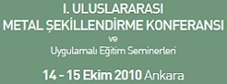
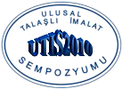
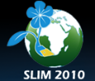
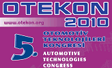

14 - 15 Ekim 2010 > I. Uluslararasý Metal Þekillendirme Konferansý ve Uygulamalý Eðitim Seminerleri:
Yer: ATILIM Üniversitesi, Ýncek, Ankara
Kongre Programý
14.10.2010, Perþembe 09.00 – 18.00
Konuþmacýlar ve Konferanslar
- Dr. M. Hänsel, ThyssenKrupp-Presta, Liechtenstein Future Trends in Precision Cold Forging
- Prof. K. Osakada, Nagoya Üniversitesi, Japonya Effective Usage of Servo Press in Metal Forming
- Prof. K. Kuzman, University of Ljubljiana, Slovenya Reliable and Fast Small Quantity Production of Sheet Metal Components
- Prof. F. Micari, Palermo Üniversitesi, Italya Recent Enhancements in Sheet Forming and Joining Technologies
- Prof. K. Roll, Daimler AG, Stuttgart, Almanya Simulation in Sheet Metal Forming Industry: State of the Art
- Prof. J.-C. Gelin, Université de Franche-Comté, Fransa Micro-Processing of Polymers and Metals with Applications in Micro-Forming and Micro-Powder Injection Moulding
- Prof. F. Vollersten, Strahltechnik Universität Bremen, Almanya Advances in Micro Forming
- Prof. D.Y. Yang, KAIST, G. Kore New Insights Into Incremental Forming as Flexible Forming Technology
- Prof. N. Bay, Danimarka Teknik Üniversitesi, Danimarka Single Point Incremental Forming of Sheet Metal Components
- Prof. T. Altan , Ohio State Üniversitesi, ABD Metal Forming Research for Industrial Applications How can we improve Industry-University Cooperation?
- Doç.Dr. Orhan ALANKUÞ Koç Holding, Türkiye Challanges for Metal Forming Research in the Areas of Automotive and Durable
- Prof. A.E. Tekkaya, Atýlým Üniversitesi, Türkiye Center of Excellence for Metal Forming: Motivation and Establishment
15.10.2010, Cuma 09.00 – 18.00
Uygulamalý Eðitim Seminerleri
- Malzeme Karakterizasyonu
- SEM (Taramalý Elektron Mikroskobu)
- Soðuk Dövme Teknolojisi
- Metal Þekillendirme Simülasyonlarý
Daha fazla bilgi için: http://mfce.atilim.edu.tr/ulak
12 Ekim 2010 > Turkish Rapid Prototyping and Additive Manufacturing Seminar 2010:
Yer: ÝTÜ, Gümüþsuyu, Ýstanbul
The seminar is hosted by Materialise and Partners at Istanbul Technical University. The event will bring together the latest innovative machine, material and software advances in the additive manufacturing industry.
The day will comprise of a series of short and informative talks from the leading companies in the industry. The event will also include a free buffet lunch and coffee breaks, which will provide an ideal opportunity to network with fellow industry peers.
Agenda:
| 9.00 |
Registration and coffee/tea |
| 9.30 |
Welcome and Introduction by Materialise |
| 9.40 |
Materialise – Frederik Declerck
The role of software in Additive Manufacturing |
| 10.10 |
4C Engineering & Z-Corporation - Sedat Kurtaran
Z Corp 3D Printing |
| 10.40 |
Networking break with coffee & tea |
| 11.10 |
Cadem & 3D Systems - Fatih Terzioglu
Create with Confidence |
| 11.40 |
Concept Laser - Cenk Sinirlioglu
LaserCUSING Technology |
| 12.10 |
Networking buffet lunch |
| 13.10 |
Envisiontec – Christian Frowein
Envisiontec and Rapid Prototyping |
| 13.40 |
EOS - Jose Greses
e-Manufacturing - EOS developments to Manufacturing |
| 14.10 |
Infotron & Stratasys - Arif Han Yarkin
Real Plastic and Metal Parts |
| 14.40 |
Networking break with coffee & tea |
| 15.10 |
Plastosel & Objet - Ayhan Bebitoðlu
Setting the New Standard for 3D Printing : Objet |
| 15.40 |
Solidscape - Fabio M. Esposito
Solutions for lost wax casting |
| 16.10 |
Close/Networking |
Daha fazla bilgi için: www.materialise.com/TurkeyAMS
01 - 02 Ekim 2010 > 2. Ulusal Talaþlý Ýmalat Sempozyumu (UTÝS 2010)
Yer: Selçuk Üniversitesi Alaaddin Keykubat Kampüsü, Konya
Üretim, bir ülkenin kalkýnmasýndaki en büyük etkendir. Üretim faaliyetleri arasýnda talaþlý imalat önemli bir yere sahiptir. Talaþlý imalat ile ilgili yapýlan Ar-Ge çalýþmalarý ilgili üniversite, iþletmeler ve araþtýrma kurumlarý tarafýndan birbirlerinden baðýmsýz olarak gerçekleþtirilmektedir. Çalýþmalarýn baþarýya ulaþmasý, ilgililerin geliþmelerden haberdar olmalarý ve çalýþmalarýn tekrarlanarak zaman kaybedilmemesi için bu tür bilimsel toplantýlar büyük önem arz etmektedir.
Talaþlý imalat alanýnda gereksinimlerin, karþýlaþýlan problemlerin ve bunlarýn çözüm yollarýnýn görüþüleceði bilimsel tartýþma ortamlarýnýn belirli periyotlarda oluþturulmasý gerekmektedir. Bu kapsamda ilk defa (UTÝS 2009) Yýldýz Teknik Üniversitesi'nde gerçekleþtirilen bu Sempozyum'un 2.'si Selçuk Üniversitesi'nde yapýlacaktýr.
Sempozyum'un ilk günü akademik çalýþmalarýn sunumlarý yapýlacak, ikinci gün amaca yönelik sanayi temsilcilerini ve akademisyenleri buluþturacak panel ve yuvarlak masa toplantýlarý ile devam edilecektir. Etkinliðe katýlmayý arzu eden konu ile ilgili firmalar için, kendi tanýtýmlarýný yapabilecekleri panolar ve stant masalar verilebilecektir.
Sempozyumun konularý:
- Talaþ Kaldýrma Mekaniði ve Dinamiði
- Talaþ Kaldýrma Sistemlerinin Teorik Uygulamalarý ve Simülasyonu
- Talaþ Kaldýrma Yöntemleri
- Kesici Takýmlarýn Tasarým ve Ýmalatý
- Takým ve Ýþ Parçasý Tutturma Tertibatlarý
- Ýþlenebilirlik
- Takým Tezgahlarý
- Talaþlý Ýmalatta Optimizasyon
- Alýþýlmamýþ Talaþ Kaldýrma Yöntemleri
|
- Mikro ve Nano Talaþ Kaldýrma
- Yüksek Hýzlý Ýþleme
- CAD/CAM Sistemleri
- Talaþ Kaldýrmada Titreþimler
- Takým Durumu Ýzleme
- Talaþlý Ýmalatta Kontrol Yöntemleri
- Ýþlem Planlama
- Talaþlý Ýmalatta Yapa Zeka Uygulamalarý
- Amaç ve Sempozyum Kapsamýna Giren Diðer Ýlgili Konular
|
Daha fazla bilgi için: www.utis2010.selcuk.edu.tr
24 - 25 Haziran 2010 > 1st International Conference on Sustainable Life In Manufacturing, SLIM2010 (1. Uluslararasý Üretimde Sürdürülebilir Yaþam Konferansý)
Yer: Eðirdir Mavigöl Hotel, Isparta
Süleyman Demirel Üniversitesi CAD/CAM Araþtýrma ve Uygulama Merkezi ve Slovenya Ljubljana Üniversitesi Üretim Araþtýrma Laboratuvarý iþbirliðinde düzenlenecek olan bu Konferans'ta uluslararasý platformda bilim adamlarý, araþtýrmacýlar, sanayiciler ve öðrenciler her türlü üretim teknolojilerindeki mevcut ve ileriye yönelik sürdürülebilir ürün geliþtirme ve sürdürülebilir üretim teknolojileri hakkýnda çalýþmalarýný sunarak, problemlerin çözümlenmesi hakkýnda deðerli fikirlerini paylaþabileceklerdir.
Uluslararasý araþtýrma enstitüleri ve endüstriyel partnerlerinde buluþacaðý bu konferansta, ulusal ve uluslararasý boyutta sürdürülebilir üretim teknolojilerinin üretimdeki yeri ve konumu hakkýnda tecrübe, bilgi, uygulama ve fýrsatlarýn paylaþýlmasý, tartýþýlmasý saðlanacaktýr.
Konferans dili Ýngilizce olacaktýr. Konferansta sunulan çalýþmalarýn bir bölümü geniþletilmiþ olarak SCI tarafýndan taranan uluslararasý bilimsel dergilerde yayýnlanacaktýr.
Konferans konularý:
* Sustainable Machining (HSC, hard-machining, soft machining, Cryogenic machining, High-pressure jet assisted machining…)
* Sustainable Design & Product Development
* Remanufacturing and Recycling
* Life Cycle Engineering and Assessment
* Energy Efficiency
* Emission Reduction
* Business Models for Sustainable Development
* Engineering Education
Daha fazla bilgi için: http://sempozyum.sdu.edu.tr/slim2010
07 - 08 Haziran 2010 > 5. Otomotiv Teknolojileri Kongresi, OTEKON 2010
Yer: Almira Otel, Bursa
Türkiye'de otomotiv alanýnda bir misyonu baþarýyla yürütmekte olan, yeni araþtýrma ve geliþtirme çalýþmalarýný tetiklemede etkili olan OTEKON Kongrelerinin Beþincisi OTEKON 2010, 7-8 Haziran 2010 tarihlerinde Bursa'da düzenlenecektir.
OTEKON'08'de sunulan bildiriler arasýndan jürinin seçtiði bildiriler Science Citation Index dergisi International Journal of Vehicle Design (IJVD) Special Issue'de basýlmýþtý. OTEKON 2010 Kongresi'nde sunulan bildiriler arasýndan da jürinin seçeceði bildiriler Science Citation Index dergisi International Journal of Advanced Manufacturing Technology (IJAMT) Special Issu'de basýlacaktýr. Special Issue "Advanced Computer Aided Design and Manufacturing Technologies in Automotive Industry" olarak basýlacaktýr. Bu nedenle 5. Otomotiv Teknolojileri Kongresi’ nin bildiri son gönderim tarihi 01 Mart 2010’ a kadar uzatýlmýþtýr. OTEKON 2010 ile ilgili bildiri hazýrlama ve önemli tarihler www.otekon.org adresinde verilmektedir.
Beþincisi 7-8 Haziran 2010 tarihlerinde Bursa’ da düzenlenecek OTEKON 2010 Kongresine otomotiv alanýnda çalýþan akademisyenler ile sektör çalýþanlarýnýn bildiri sunarak veya dinleyici olarak katýlýmlarýný bekliyoruz.
Kongre konularý:
Taþýt Tasarým ve Geliþtirme
Taþýt Dinamiði
Taþýt Güvenliði
Taþýt NVH
Otomotiv Elektroniði ve Kontrol Sistemleri
Sanal Tasarým ve Mühendislik
Taþýt Benzetim ve Test Yöntemleri
Otomotiv Malzemeleri
Üretim Teknolojileri
Taþýt Transmisyon Sistemleri
Tedarik Zinciri ve Lojistik Yönetimi
Üretim Planlama
|
Hibrid Taþýtlar
Yakýt Hücreleri
Elektrikli Araçlar
IC Motor Teknolojisi
Alternatif Yakýtlar
Taþýt Alternatif Tahrik Sistemleri
Transport Sistemleri
Enerji Kaynaklarý ve Ekoloji
Otobüs, Kamyon ve Aðýr Vasýta Araçlarý
Otomotiv Eðitimi
Özel Amaçlý Taþýtlar (Raylý, Askeri, Ýþ Makineleri...) |
Kongre Programý'ndan seçmeler:
>>> 07 Haziran 2010 Pazartesi
11:00 - 12:15, A SALONU
Oturum Baþkaný: Prof.Dr.Ferruh ÖZTÜRK
Aðýr Ticari Araçlarda 7 Serbestlik Dereceli Model Yardýmýyla Sürüþ Konforu Ýyileþtirmesi
Yetkin Kader
A Fictitious "Suspension Platform" for Optimal Ride Comfort
Göksu Aydan - Ender Ciðeroðlu - Çaðlar Baþlamýþlý
Ride Comfort Evaluation of a Passenger Coach By Experimental and Fe Techniques
Murat Özsoy - Mehmet Fýrat - Vahdet Uçar - Ümit Kocabýçak - Erdal Aba
Araç Konfor Özelliklerinin Analizi: Model Tanýmý ve Analizler ile Konfor Deðerlendirmesi
Ýdris Karen - Necmettin Kaya - Ferruh Öztürk - Murat Yýldýzhan - Ayça Yurttaþ - Ýbrahim Korkmaz
13:30 - 14:45, C SALONU
Oturum Baþkaný: Prof.Dr.Cemal ÇAKIR
Investigation On Deformation Characteristics of Rotary Draw Tube Bending And Roll Bending Operations
Levent Sözen - Mehmet A. Güler - Recep M. - Görgülüarslan - Engin M. Kaplan
FDM Katmanlý Üretim Teknolojisinin Araç Geliþtirme Sürecindeki Uygulamalarý
Ýsmail Durgun - Davut Baþaran
Elektrik Direnci Ýle Isýtma Metoduyla Kapý Barý Parçasýnýn Sýcak Þekillendirilmesi
Gökalp Uysal - Sancar Yörükoðlu
Improving The Accuracy of Stamping Analyses Including Springback Deformations
Mehmet Fýrat - Mustafa Yenice - Mustafa Akpýnar - Mesut Kaya
16:30 - 17:45, C SALONU
Oturum Baþkaný: Prof.Dr.N.Sefa KURALAY
Soðuk Þekillendirilmiþ Ön Aks Gövdesinin Sonlu Elemanlar Analizi Yardýmýyla Mekanik Tasarýmý
Mehmet Murat Topaç - Hasan Günal - N. Sefa Kuralay
Finite Element Analysis of Backhoe-loader Front Arm
Eyüp Yeter - Ahmet Erklið - Murat Gülbay
Prototip Gövde Kapý Bölgesi Tasarýmý ve Analizi
Ýmdat Taymaz - Fýrat Elhüseyni
Bagaj Kapaðý Mekanizmasý Tasarýmý ve Tasarýmýn "4-Çubuk Mekanizma" Sistemi Ýle Kinematik Analizi
Burak Baykuþ - Özgür Uyar - Elmas Anlý Ak - Ýbrahim Özkol
>>> 08 Haziran 2010 Salý
10:30 - 11:45, C SALONU
Oturum Baþkaný: Prof.Dr.Bilgin KAFTANOÐLU
Alüminyum Bal Peteði Sandviç Yapýlarýn Dinamik Analizi
Gürkan Þakar - Mustafa Yaman - F. Çakmak Bolat
Endüstriyel Tip Vakumlu Süpürücü Tasarýmý ve Ýmalatý
Emre Þahin - Bilgin Kaftanoðlu - Kahraman Albayrak - Azmi Biçkes - Ertuðrul Baþeþme - Mahir Dursun -
Buket Aygün
Rüzgar Yükünün Bir Ticari Araç Servis Kapýsýna Olan Etkilerinin Ýncelenmesi
Melih Tuðrul - Serkan Er
Aðýr Þehir Ýçi Trafik Koþullarý Ýçin Motor Miline Entegre Dur&Çalýþtýr Özellikli Hafif Hibrit Elektrikli Aracýn Elektrikli Güç Aktarma Sisteminin Geliþtirilmesi
Can Gökçe - Özgür Üstün - Utku Karakaya - Murat Yýlmaz - Ali Þengür - Mert Çiftçioðlu - R. Nejat Tuncay
15:30 - 17:00, A SALONU
Oturum Baþkaný: Prof.Dr.Abdullah MÝMAROÐLU
Kauçuk–Metal Burçlarda Kauçuk Sertliði ve Çaplama Ýþleminin Kopma Mukavemetine Etkisi
Ali Durmuþ - Ragýp Evren Özgün - Sedat Ülkü
Kesme Kuvveti Sonucu Insert Üzerinde Oluþan Gerilmelerin Sonlu Elemanlar Yöntemi Ýle Belirlenmesi
Ferit Fýrat - Fatih Koþar
Fuel Tank Bracket & Strap Design Iterations Considering The Assembly Load Effects
Berna Balta - Ali Çýnar - Bülent Balta
Taþýt Lastiklerinin Sonlu Elemanlar Yöntemiyle Modellenmesi ve Simulasyonu
Taner Öztürk - Ýdris Karen - Necmettin Kaya - Ferruh Öztürk
Kalýp Tasarým Süresinin Kýsaltýlmasý
Ferit Fýrat - Fatih Koþar
15:30 - 17:00, C SALONU
Oturum Baþkaný: Prof.Dr.Nurettin YAVUZ
Achieving Low Weight and Low Cost Body for a New Coach Type Using Simulation and Previous Lessons Learned
Ahmet Avcý - Bertan Bayram
Dökme Demir ve Ýnce Taneli Çelik Arasýnda Gerçekleþtirilen Kaynaklý Baðlantýnýn Optimizasyonu
M.Tolga Ertürk - Caner Batýgün - Ýbrahim Korkmaz
Kalýp Tasarým ve Ýmalat Sürelerinin Azaltýlmasý: Kalýp Tasarým Kurallarý ile Parametrik Tasarým Tekniðinin Kullanýmý
Coþkun Sabah - Erkan Polat - Ferruh Öztürk
Computer Aided Fatigue Life Time Ýmprovement of Rubber Based Automotive Engine Mounts
Arda Gürarda - Cem Burhan - Ýdris Karen - Necmettin Kaya - Ferruh Öztürk - Ýbrahim Korkmaz
Daha fazla bilgi için: www.otekon.org
|